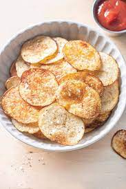

homemade-potato-chips

Description
Homemade chips great for a snack
Ingredients
- 4 medium potatoes pilled and sliced paper-thin
- 3 tablespoons of salt
- 1 quart of oil deep frying
Steps
- Transfer potato slices to a large bowl of cold water as you slice them
- Drain slices and rinse under cold water. Refill the bowl with water, add 3 tablespoons salt, and put slices back in the bowl. Let potatoes soak in the salty water for at least 30 minutes
- Drain and rinse slices again. Pat dry
- Heat oil in a deep-fryer to 365 degrees F (185 degrees C)
- Working in small batches, fry potato slices until golden. Remove with a slotted spoon and drain on paper towels. Continue until all of the slices are fried
- Season potato chips with additional salt if desired